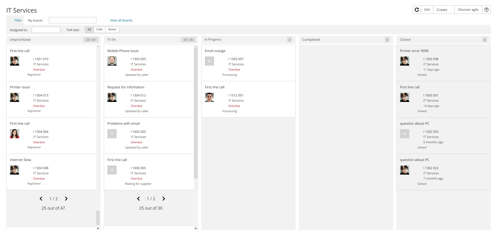
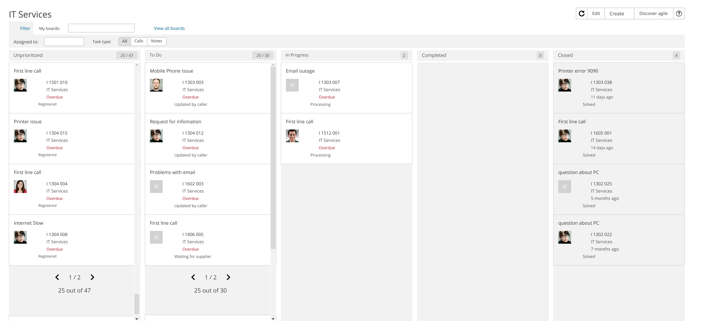

Kanban-board Redesign
Reduced task time by 23% through unified task handling
Role: Senior UX Designer · Company: TOPdesk GmbH · Tools: Figma, Miro · Status: MVP testing
TL;DR
Unified Incidents, Changes, and OM into one board, refreshed the UI with the design system, added filters and keyboard controls, and focused the MVP on the most used flows. Result: faster task handling and higher satisfaction.
Role
Senior UX Designer
Team
1 PO, 4 developers, 1 tester, 1 designer, 1 scrum master, 1 solutions architect
Timeline
~9 months
Outcomes
- 23% reduction in task completion time
- 9/10 user satisfaction
- 2+ new design system components contributed
🎯 Case Study: Revamping the Kanban Board for Operations Management
Role
Senior UX Designer
Company
TOPdesk GmbH
Duration
~9 months
Team
1 PO, 4 developers, 1 tester, 1 Designer, 1 Scrum master and 1 Solutions Architect. Tools: Figma, Useberry, Miro, Jira
Outcomes
- 23% reduction in task completion time
- 9/10 user satisfaction
- 2+ new design system components contributed
🧭 1. The Call to Adventure
The Kanban board wasn't broken — but it wasn’t whole either. Initially, the project aimed to integrate a long-requested Operations Management (OM) module alongside the existing Incidents and Changes already displayed. Users were vocal: they wanted all their tasks in one unified view.
However, during interviews, we uncovered additional pain points:
- Missing filters
- No pagination (only 50 tasks per column visible)
- A clunky setup/editing experience
- Fragmentation due to outdated UI
At the same time, our design system had matured. It was the perfect moment to rethink the entire Kanban experience, not just plug in OM.
🚧 2. The Challenge
⏳ Constraints:
- Time pressure: We didn't know how long the project would stay alive. We needed impact, fast.
- Legacy tech: The architecture severely limited what we could realistically implement.
- Surprise insights: We assumed OM tasks needed to behave identically on the board. They didn’t — users just needed clarity and task mapping, not perfect behavioral parity.
🧪 Accessibility: While not a stated goal, I championed low-hanging improvements — tabbing order, keyboard shortcuts — to plant the seeds of inclusive design.
🧪 3. The Journey
🔍 Research
- Conducted user interviews on current Kanban use and reactions to OM integration
- Reviewed usage data to identify feature gaps
- Tested mid- and high-fidelity prototypes: task setup, closing tasks, filters, pagination
💡 Key Insights
- Filters were more critical than expected — users wanted granular task control.
- Showing more than 50 tasks per column was a top request — but ultimately blocked by backend limits.
🔁 Iteration
- Task closure flows
- Adding OM tasks
- Advanced filter placement
- Pagination patterns
- Task setup wizards
💬 Feedback
- “It feels intuitive.”
- “Finally, OM doesn’t feel like an afterthought.”
- Accessibility tweaks — like tabbing and shortcuts — were positively received.
🧱 Design System Contribution
- A new side panel layout
- Updated Kanban card UI
- A wizard-style stepper for setting up/editing boards
✨ 4. The Transformation
✅ Key Changes
- Full UI refresh using the design system
- Filter bar for task types (Incidents, Changes, OM)
- Keyboard accessibility enhancements
- Ability to toggle closed tasks
- Seamless OM task integration
📈 Outcomes
- ⏱ 23% faster task completion (measured via timed task test pre/post-launch)
- 🌟 9/10 satisfaction (via feedback widget + optional comments)
- This was not just a redesign — it was a strategic UX overhaul delivered under real-world constraints.
🎓 5. The Return
What I Learned
- Design ≠ intent: You can design something great and still lose it to technical limits. Pagination was our toughest letdown — greenlit at first, then blocked during implementation.
- Prioritization is a team sport: We dropped the setup screen redesign due to time — and while it stings, usage data showed users barely touched it. Pragmatism won.
- Stay ahead, but stay nimble: I worked 2 months ahead of development. This buffer gave me time for exploration, visual polish, and design system contributions.
What I’d Improve with More Time
- Full setup wizard redesign
- Advanced filters (multi-level, saved views)
- More robust accessibility options
- True pagination or infinite scroll for dense boards
Biggest Victory?
Turning a feature request into an opportunity for strategic redesign — and pushing through real constraints to deliver a cleaner, smarter, and more unified Kanban experience.
 
